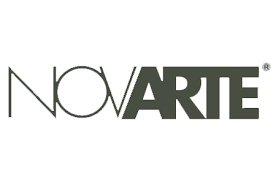
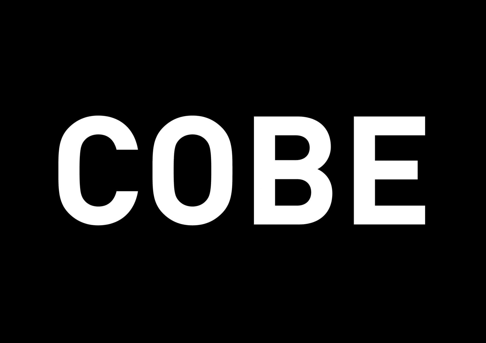

MARTINA CAMARRI ARCHITECT
WORK EXPERIENCE
- Febraury 2016 Now

- Architect at ARTECO-Architecture Enginnering Consulting s.r.l of arch. Calcagni, arch. Cenna, arch.
Zarbato and arch. Milani, Verona
- May 2012 November 2015

- Architect at Research and Development Departament of NOVARTE s.r.lof Luca Sciamanna, Teramo
- October 2014 May 2015

- Architect at COBE Berlín, prof. dr. V.M. Carlow and prof. arch. Sigurd Larsen, Berlin Germany
- November 2011 Now
- Architect co-founder atSML group, of arch. Buono, arch.Camam and arch Federici, Europe
- September 2011 June 2012
- Internship at STRATO, of arch. Fraschetti and arch. Tattolo, via Andrea Sacchi, Roma
EDUCATION
- July 2014 September 2014
- English Course at Kaplan English School. New York City-SoHo, USA.
- November 2009 Janaury 2013
- Master's Degree in "Architecture" at Rome University "Sapienza",
School of Architecture, no/no, supervisor prof. arch. Fabrizio Tucci,
co-supervisor arch Giovanni Dibenedetto.
- Feb 2011, Roma Oct 2011, Paris
- European Workshop"SURF_AS:Strategie Urbane Reti Forme.Abitare
Sostenible" Rome University "Sapienza. School of Architecture, width
Ecole Nationale Superieure d'Architecture Malaquais - Paris./dd>
- October 2006 October 2009
- Bachelor of Science Degree in Architecture at Rome University
"Sapienza",School of Architecture, no/no,cum laude, supervisor prof.
arch. P.V Dell'Aira, co-supervisor arch. Giovanni Dibenedetto.
- September 2001 July 2006
- High School Diploma at Liceo Scientifico Temistocle Calzecchi Onesti, Fermo,82/100.
DIDACTIC EXPERIENCE AND PRIZE
- December 2014
- Essays of the case study inside an anthology of examples titled "The
'twin house': a formative theme" by prof. P.V. Dell'Aira,"Architecttura e
Progetto-DiAP" Departament-Rome University "Sapienza"
- May 2013
- SML + MDD Michela Esposito: Second Prize at the Food Design
"iceCREAm"Italian National Contest.
- March 2010 July 2011
- Assistant Professor of Architectural Design Laboratory 1. of the prof.
P.V Dell'Aira at the University "La Sapienza" of Rome.
Autorizo el tratamiento de mis datos personales...